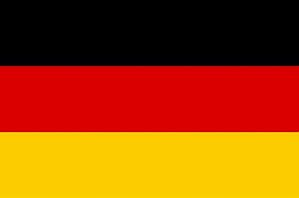

Kader 2023/24
Torwart


Abwehr
Nico Schlotterbeck
Abwehr
Nummer 4
01.12.1999
191 cm

Mats Hummels
Abwehr
Nummer 15
16.12.1988
191 cm

Thomas Meunier
Abwehr
Nummer 24
12.09.1991
191 cm


Niklas Süle
Abwehr
Nummer 25
03.09.1995
195 cm

Mittelfeld
Marco Reus
Mittelfeld
Nummer 11
31.05.1989
180 cm

Julian Brandt
Mittelfeld
Nummer 19
02.05.1996
185 cm

Emre Can
Mittelfeld
Nummer 23
12.01.1994
186 cm

Abdoulaye Kamara
Mittelfeld
Nummer 32
06.11.2004
182 cm


Sturm
Niclas Füllkrug
Sturm
Nummer 14
09.02.1993
189 cm

Julien Duranville
Sturm
Nummer 16
06.05.2006
170 cm

Youssoufa Moukoko
Sturm
Nummer 18
20.11.2004
179 cm


Karim Adeyemi
Sturm
Nummer 27
18.01.2002
180 cm


Trainer
Edin Terzic
Trainer
Seit 01.07.2018
30.10.1982
184 cm


Sebastian Geppert
Co. Trainer
Seit 01.07.2013
11.01.19845
181 cm

Matthias Kleinsteiber
Torwart Trainer
Seit 01.07.1992
05.01.1978
188 cm